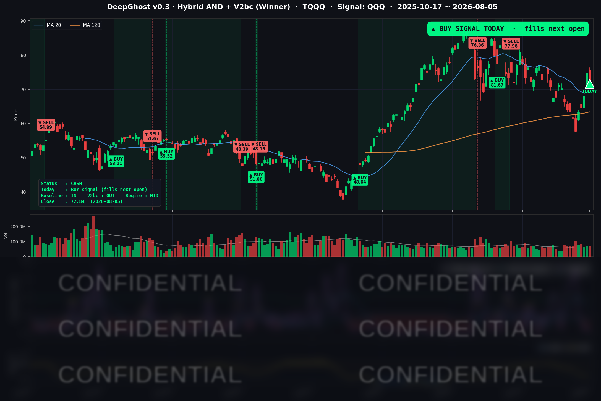

👻 매일 시그널과 히스토리를 홈페이지에서 한눈에 → www.ghostai.co.kr
로테이션성 조정을 기회로 삼아 TQQQ 매수 신호로 전환했습니다. AI 신호는 확률로 판단합니다. 현재 시장 상황 및 가격의 움직임을 과거에 비추어 보았을 때, 앞으로 올라갈 확률이 높다는 얘기이죠. 시장 상황은 아직 반도체 변동성이 남아 있지만, 거시적으로 보았을때 9월 FOMC전까지는 큰 문제는 없어보입니다. 본인 성향헤 맞게 분할 또는 전량 매수하시기 바랍니다.
📊 오늘의 매매 신호
| 항목 | 내용 |
|---|---|
| 오늘 할 일 | 🟢 TQQQ 매수 — 오늘 저녁 미국 장 개장 후 (한국시간 오후 10:30~) |
| 포지션 상태 | 매수 신호 발생 |
| 신호 발생일 | 2026-08-05 |
| 직전 현금 보유 기간 | 2026-06-29 ~ 2026-08-05 (약 5주 관망) |
TQQQ 시그널 — OUT OF POSITION → 매수 전환
현재 상태: 현금 보유 구간에서 매수 신호로 전환 (익일 개장가 체결 대기)

약 5주간(2026-06-29부터) 이어진 현금 관망 구간에서, 오늘 모델이 매수 신호를 냈습니다. 오늘 시장이 되돌림 조정을 받은 자리(QQQ -0.90%, TQQQ -2.65%)에서 매수로 전환됐습니다.
이는 Ghost.AI V0.3 모델의 보수적 성격을 잘 보여줍니다. 강세 당일을 뒤늦게 추격하지 않고, 가격이 한 번 눌린 자리를 진입 지점으로 삼는 특징이 있습니다.
오늘 미국 시장 — 시황 요약
지수 마감
| 지수 | 종가 | 등락률 |
|---|---|---|
| S&P 500 | 7,723.55 | -0.17% |
| 나스닥 종합 | 26,363.44 | -0.83% |
| 다우존스 | 54,349.12 | +0.49% |
| 러셀 2000 | 3,019.19 | -0.59% |
전형적인 순환매(로테이션) 장세였습니다. 다우는 하루 더 사상 최고치를 경신(+0.49%)했지만, 나스닥과 QQQ는 반도체·빅테크 조정으로 하락(-0.83% / -0.90%)했습니다. 지수 표면의 변동 폭은 작았으나 종목별 편차가 컸던 하루였습니다.
국채 금리 동향
| 만기 | 수익률 | 전일 대비 |
|---|---|---|
| 3개월 | 3.725% | -0.5bp |
| 10년 | 4.617% | -1.0bp |
| 30년 | 5.174% | -1.6bp |
전 구간이 소폭 하락했습니다(장기물이 더 크게 내리는 완만한 플래트닝). 장단기 스프레드(10년-3개월)는 +89.2bp로 정상적인 우상향 곡선을 유지하고 있습니다. 금리 하락 자체는 성장주에 우호적이며, 오늘 주가 하락은 금리가 아니라 개별 종목 이슈가 이끌었습니다.
연준 발언 & 금리 패스
리사 쿡 연준 이사가 경제 전망을 주제로 발언했으며, 매파적 서프라이즈는 없었습니다. 시장은 중립~완만한 비둘기파로 해석했습니다. 이날 발표된 ISM 서비스 지표의 고용 세부 항목이 위축을 보인 점과 금값 급등이 9월 금리 인하 기대를 살짝 끌어올리는 배경이 됐습니다. 다만 서비스업 확장이 25개월째 이어지고 있어, 9월 인하와 동결을 둘러싼 확률은 아직 유동적입니다.
오늘의 핵심 이슈
- AMD, 실적은 좋았는데 마진에서 발목 — AMD는 매출·이익·가이던스 모두 시장 기대를 넘겼지만 주가는 -7% 급락했습니다. 원인은 총마진이 컨센서스(56%)를 밑돈 54%로, AI 인프라 초기 투자 비용 부담이었습니다. 좋은 실적에도 파는 전형적인 '뉴스에 매도' 흐름이었습니다.
- 알파벳(GOOGL) 규제·투자 부담 이중 압박 — GOOGL은 -4.03%로 커버리지 최약세를 기록하며 나스닥 하락을 주도했습니다. 검색 독점 판결의 구제책 우려와 큰 폭의 설비투자 계획이 함께 부담으로 작용했습니다.
- 금(Gold) 사상 최고가 랠리 — 금 선물이 하루 +5.19% 급등하며 신고가를 썼습니다. 9월 연준 완화 기대 강화, 달러 약세, 중앙은행의 지속 매수가 겹친 결과입니다.
변동성 & 투자심리
VIX는 15.81로 오히려 -4.18% 하락했습니다. 지수가 내린 날에 공포지수가 함께 내렸다는 것은, 이날 조정이 공포 확산이 아닌 질서 있는 순환매였음을 시사합니다. 절대 수준도 15선으로 낮아 시장은 여전히 안도 구간에 있습니다. 공포탐욕지수는 사상 최고치 랠리 직후 낙관(탐욕) 우위로 추정되나, 당일 실측치는 정성적 참고에 한정합니다.
매크로 & 원자재
- WTI 유가: $75.08 (-0.91%) — 호르무즈 해협 재개 기대로 소폭 약세
- 브렌트유: $79.40 (+0.05%)
- 금(Gold): $4,308.0 (+5.19%) — 급등하며 안전자산 선호 뚜렷
유가는 눌리고 금은 급등하며 대비가 선명했던 하루입니다.
주요 종목 동향
| 종목 | 전일 종가 | 당일 종가 | 등락률 | 비고 |
|---|---|---|---|---|
| AAPL | 309.38 | 311.00 | +0.52% | 소폭 강세 방어 |
| NVDA | 211.94 | 219.22 | +3.43% | 커버리지 최강, AMD 마진 이슈의 상대 수혜 |
| MSFT | 492.81 | 487.46 | -1.09% | 빅테크 동반 조정 |
| GOOGL | 377.65 | 362.43 | -4.03% | 규제·투자 부담, 커버리지 최약세 |
| META | 587.94 | 588.77 | +0.14% | 보합권, 상대 방어 |
| AMZN | 277.42 | 272.65 | -1.72% | 빅테크 조정 동참 |
| TSLA | 327.35 | 321.55 | -1.77% | 위험자산 회피 흐름 |
| NFLX | 73.57 | 74.20 | +0.86% | 강세 지속 |
| AVGO | 418.16 | 418.28 | +0.03% | 보합, 마진 이슈 전이 제한적 |
| QCOM | 162.67 | 157.53 | -3.16% | 반도체 약세 동참 |
| INTC | 100.86 | 101.06 | +0.20% | 소폭 강세, 방어 |
| MU | 892.67 | 893.19 | +0.06% | 보합, 메모리 사이클 견조 |
반도체 안에서도 AMD의 마진 이슈는 종목 고유 재료로 판단됐고, NVDA·AVGO·MU·INTC는 오히려 방어하거나 강세를 보이며 섹터 전면 붕괴는 아니었습니다.
Ghost.AI — Quantitative AI Investment
Model: DeepGhost v0.3 | Transformer-Based Deep Learning
Coverage: 13 tickers | Updated every trading day after US market close
⚠️ 본 자료는 정보 제공 목적으로만 작성되었으며 투자 권유가 아닙니다. 모든 투자의 책임은 투자자 본인에게 있습니다. 과거 성과가 미래 수익을 보장하지 않습니다.
[유의사항]
- 본 서비스는 불특정 다수를 대상으로 발행되는 단방향 정보 제공 서비스이며, 투자자 개인의 재산 상황·투자 목적·위험 선호도를 반영한 개별 투자 조언이 아닙니다.
- 고스트에이아이 주식회사는 고객과 쌍방향 의사소통(개별 상담, 맞춤형 자문 등)을 제공하지 않습니다.
- 본 콘텐츠는 투자 권유 또는 매매 주문의 청약·청약의 권유에 해당하지 않으며, 최종 투자 판단 및 그에 따른 손익의 책임은 전적으로 투자자 본인에게 있습니다.
고스트에이아이 주식회사